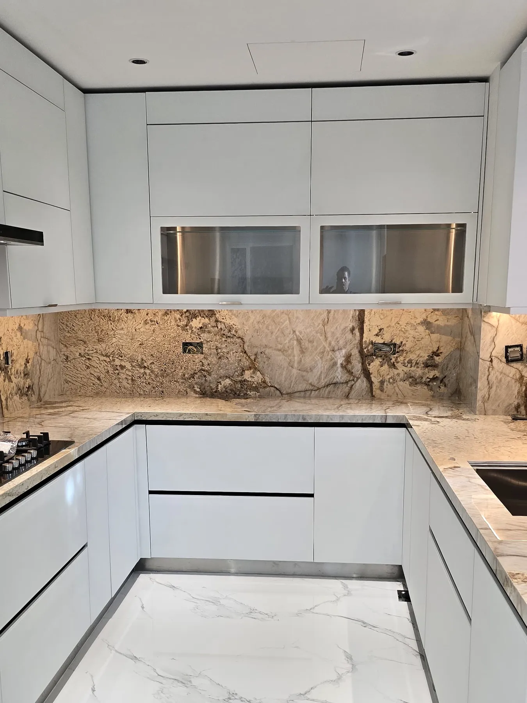

Step inside your new kitchen. Rodos stainless steel kitchens for villas and apartments in the UAE
Kitchens built on a stainless steel core, finished as warmly as the rest of your home.
Every centimetre planned.
Islands, storage and light designed around the way your family cooks and hosts.
Steel at the core, warmth on top.
A stainless steel carcass that shrugs off Gulf heat and steam, finished in oak, marble or lacquer.
Made in Ras Al Khaimah.
Built in our own factory and fitted by the same team, start to finish.
Your kitchen starts here.
Book a free design visit. We measure your space and show you your kitchen in 3D before anything is made.
- 010Years of kitchen craftsmanship
- 02In‑houseFactory at Al Ghail, Ras Al Khaimah
- 03De DietrichBuilt‑in appliance partner
- 04UAE · GCCDubai to Doha, Abu Dhabi to Muscat
About Rodos
The kitchen is the one room  — and finish it as warmly as the rest of your home
— and finish it as warmly as the rest of your home 

Compact layouts to gourmet villa kitchens.
With over 20 years behind us, we blend artistic vision with engineering precision. Every kitchen is tailored to the people who cook in it — the way you move, store, host and clean.
- Signature material
- Stainless steel, inside and out
- Made
- Locally, to international standards
- Built for
- Gulf heat, humidity and family life

Why stainless steel
Wood swells.
MDF chips.
Steel stays.
Traditional wood and MDF kitchens struggle with Gulf humidity, heat and steam. Steel doesn't — which is why it's what professional kitchens are built from.
-
01
Durability
Resistant to corrosion, heat, moisture and impact — made for Gulf climates.
-
02
Hygienic
A non-porous surface with nowhere for bacteria and germs to hide.
-
03
Sustainable
Fully recyclable and environmentally responsible, at the end of a very long life.
-
04
Aesthetic
Sleek and modern, with finishes you choose — lacquer, wood-look, quartz, porcelain.
-
05
Maintenance‑free
No chipping, warping or fading. Wipe it down and it looks the day it was fitted.
Anatomy of a Rodos kitchen
-
The carcass
High-grade stainless steel sheets, cut and folded on CNC machinery for precision. This is the part wood kitchens get wrong.
-
The fronts
Handle-less or touch-mechanism doors, finished to suit your home. Pick one below — the model updates.
-
The worktop
Quartz or porcelain surfaces with built-in hob and sink, set flush on a steel frame.
-
The fittings
Imported soft-close runners and accessories. Deep drawers that glide out fully, loaded.
-
The light
Integrated LED accents under the worktop and inside cabinets — practical at night, beautiful when you host.
Your browser can't display the 3D model — every Rodos kitchen still starts with a steel carcass, custom fronts, a stone worktop, soft-close fittings and integrated light.
How it works
Four steps
to your kitchen.
One team from the first visit to the day you cook in it. No hand-offs between strangers.
-
01
We visit and measure.
Tell us how you cook, host and store. We measure the room ourselves: walls, services, windows, the lot.

-
02
You see it in 3D.
Layout, finishes and lighting, shown in 3D before anything is cut. Change it until it is right.

-
03
We build it in Ras Al Khaimah.
Steel sheets cut and folded on CNC machinery in our own factory, checked at every stage.

-
04
The same team fits it.
Our installers know how it was made, and we stay on for after-sales care long after handover.

 luxury
luxury Kitchen
Kitchen
Start your kitchen
Let's plan
your kitchen.
Book a design consultation — we visit, measure and show you your kitchen in 3D before anything is made.